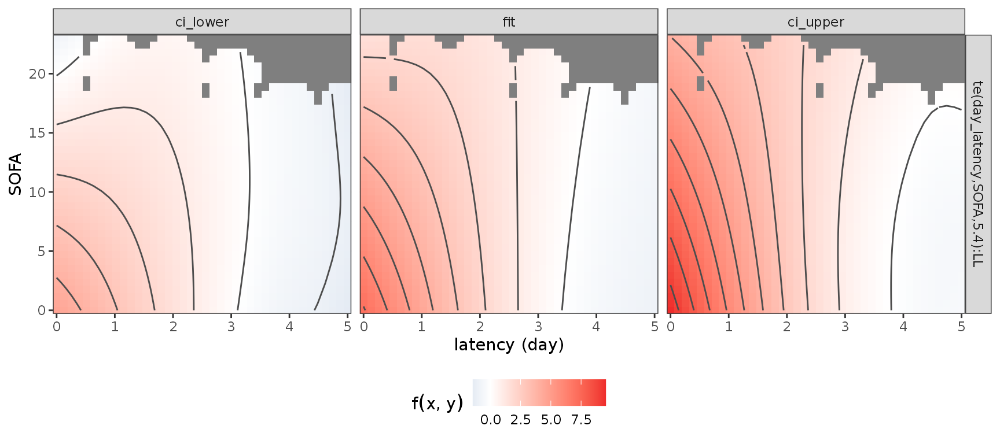
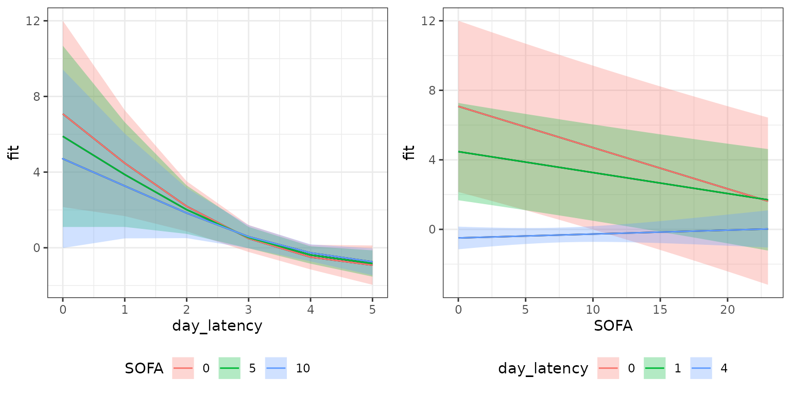
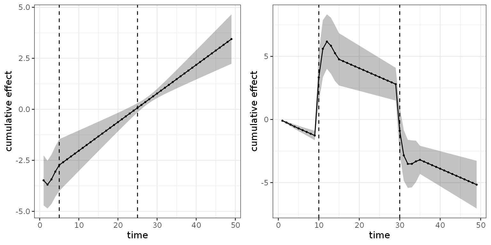

This vignette provides a short reference for the estimation and
interpretation of cumulative effects using
pammtools. For a more detailed overview
see Bender and Scheipl (2018). In the first section, a short
introduction to cumulative effects is provided. In the second
section, we present a worked example on a real data set, including
necessary data transformation, model estimation and visualization.
R Setup
Introduction
Cumulative effects can be thought of as an extension to the modeling of time-constant effects of time-dependent covariates (TDCs; see vignette on time-dependent covariates). Standard modeling of TDCs assumes that only the current (or one lagged) value of the covariate can affect the hazard at time \(t\), i.e., \[\lambda(t|z(t)) = \lambda_0(t)\exp(\beta z(t)).\]
Cumulative effects on the other hand allow the hazard at time \(t\) to depend on multiple past observations of the covariate, such that the effect at time \(t\) is the sum of all weighted effects of past observations (partial effects). to make this more concrete, consider the following quantities:
- \(t\): the follow-up time
- \(t_z\): the time at which the TDC \(z\) was observed (exposure time)
- \(z(t_z)\): the value of covariate \(z\) at exposure time \(t_z\)
- \(\mathbf{z} = \{z(t_{z}):t_z \leq t\}\): the exposure history of TDC \(z\), i.e., all recorded observations of the TDC (at time t).
Given these definitions, one possible specification of a model with a cumulative effect was suggested by Sylvestre and Abrahamowicz (2009) and is given below:
\[ \lambda(t|\mathbf{z}) = \lambda_0(t)\exp\left(\sum_{t_z \leq t} h(t-t_z)z(t_z)\right) \]
Here, past observations are weighted by a (potentially) non-linear function \(h\) of the latency (\(t-t_z\)), i.e., the time that has passed since covariate \(z(t_z)\) was observed, relative to the time of interest \(t\). The cumulative effect is then the sum of all partial effects \(h(t-t_z)z(t_z)\).
The above model also makes some simplifying assumptions, e.g.:
- the partial effect of the TDC (\(z\)) is linear in the covariate values
- the weighting function \(h\) only depends on the latency, not on the specific combination of follow-up \(t\) and exposure time \(t_z\)
- the covariate has been observed in 1 unit steps w.r.t. time-scale \(t\)
A more flexible cumulative effect can be defined as follows:
\[ g(\mathbf{z}, t) = \int_{\mathcal{T}(t)}h(t, t_z, z(t_z))\mathrm{d}t_z, \]
with
- \(g(\mathbf{z},t)\): the cumulative effect of covariate history \(\mathbf{z}\) on the hazard at time \(t\) (numerically, the integral is usually approximated by a weighted sum)
- \(h(t, t_z, z(t_z))\): the contribution of covariate \(z\) observed at time \(t_z\) with value \(z(t_z)\) to the cumulative effect at time \(t\) (partial effect in the following). In the framework of PAMMs, these partial effects ares estimated by penalized splines.
- \(\mathcal{T}(t)\): the integration limits (lag-lead window) that control how many past observations of \(\mathbf{z}\) contribute to the cumulative effect at time \(t\). The minimal requirement is \(\mathcal{T}(t)=\{t_{z}: t_z \leq t\}\), i.e., only past observations of the TDC can contribute to the cumulative effect at time \(t\).
A visual representation of exemplary lag-lead windows is depicted below:
R-Code lag-lead windows
p_ll1 <- gg_laglead(0:10, 0:9, ll_fun = function(t, tz) t >= tz)
my_ll_fun <- function(t, tz, tlag = 2, tlead = 5) {
t >= tz + tlag & t < tz + tlag + tlead
}
p_ll2 <- gg_laglead(0:10, 0:9, ll_fun = function(t, tz) t == tz)Illustration of two different lag-lead windows.
The left panel represents the minimal requirement \(\mathcal{T}(t)=\{t_{z}: t_z \leq t\}\). For example, the observation of the TDC at time \(t_z=4\), starts to contribute to the cumulative effect in interval \((4,5]\) and continues to contribute until the last interval \((9,10]\), although with potentially different weights, as, in general, \(h(t=5, t_z = 4, z(4))\) can be different to \(h(t=10, t_z=4, z(4))\).
The right panel illustrates that a “standard” model for time-to-event data with a constant effect follows as a special case of the general definition of the cumulative effect with lag-lead window \(\mathcal{T}(t)=\{t_{z}: t_z = t\}\) and \(h(t, t_z, z(t_z)) \equiv \beta z(t)\)
Example: SOFA-score and extubation
For an illustration of the functionality that
pammtools provides to work with cumulative
effects, we use (a sample) of the data analyzed in Heyard et al. (2018) and provided in the package
TBFmultinomial (note that their analyses
had a totally different goal, including modeling of competing risks;
here we simply use the data for illustrative purposes).
In the following analysis, we will model the (cause-specific) hazard
for the event extubation, considering all competing events
as censoring events. Covariates include gender,
type (admission type), SAPSadmission (SAPS
score at admission) and the time-dependent covariate SOFA
score (lower scores indicate better health).
To use the data for our purposes, we first perform some preprocessing, which produces two data sets:
-
event_df: Data in “standard” format (one row per subject), that only includes time-constant covariates -
tdc_df: Data containing information on time-dependent covariates (hereSOFA) and exposure time \(t_z\)
R-Code data preprocessing
data(VAP_data, package = "TBFmultinomial")
# create unique IDs
VAP_data <- VAP_data %>%
mutate(tmp_id = paste(ID, day, sep = ".")) %>%
group_by(ID) %>%
mutate(csdup = cumsum(duplicated(tmp_id))) %>%
ungroup() %>%
mutate(ID = ifelse(csdup > 0, ID + 1000, ID))
# assume constant SOFA score between updates
VAP_complete <- VAP_data %>%
group_by(ID) %>%
mutate(time = max(day)) %>%
ungroup() %>%
complete(ID, day = full_seq(day, 1)) %>%
fill(gender, type, SAPSadmission, SOFA, outcome, time, .direction = "down") %>%
filter(day <= time)
event_df <- VAP_complete %>%
select(ID, gender, type, SAPSadmission, outcome, time) %>%
group_by(ID) %>%
slice(n()) %>%
mutate(outcome = 1 * (outcome == "extubated")) %>%
ungroup()
tdc_df <- VAP_complete %>%
select(ID, day, SOFA) %>%
mutate(day = day - 1) %>% # assume that SOFA available at the beginning of the day
filter(day <= 49)
An overview of the preprocessed data is given below:
## # A tibble: 6 × 6
## ID gender type SAPSadmission outcome time
## <dbl> <fct> <fct> <int> <dbl> <int>
## 1 2 0 Medical 50 0 5
## 2 3 1 Medical 34 1 9
## 3 4 0 Medical 45 0 7
## 4 5 1 Medical 21 0 15
## 5 6 1 Medical 50 0 6
## 6 8 0 Medical 54 1 3## # A tibble: 6 × 3
## ID day SOFA
## <dbl> <dbl> <int>
## 1 2 0 9
## 2 2 1 8
## 3 2 2 9
## 4 2 3 9
## 5 2 4 8
## 6 3 0 10SOFA profiles for individual patients. Each line represents a patient, each pixel represents a measurement.
Data transformation
For illustration, we fit a DLNM (Gasparrini et al. 2017) with cumulative effect of the SOFA score (\(z\)) as defined below:
\[ g(\mathbf{z}, t) = \int_{\mathcal{T}(t)}h(t-t_z, z(t_z))\mathrm{d}t_z, \]
with \(\mathcal{T}(t) = \{t_z: t_z \leq t \leq t_z + 5\}\), which means that only the SOFA scores observed within the last five days can affect the hazard at time \(t\).
Remember that the specification of the partial effect \(h(t,t_z, z(t_z))\) as well as the definition of the lag-lead window are important parts of the analysis and need to be considered at the beginning of the analysis as this information goes into the code for the data transformation:
ped <- as_ped(
list(event_df, tdc_df),
Surv(time, outcome) ~ . + cumulative(latency(day), SOFA, tz_var = "day",
ll_fun = function(t, tz) t >= tz & t <= tz + 5),
cut = 0:49, # administrative censoring at t = 49
id = "ID")
ped$day_latency <- ped$day_latency * ped$LLAbove, we
- used the formula special
cumulativeto informas_pedto perform data preprocessing in order to fit cumulative effects - wrapped the variable
day(\(t_z\)) within thelatencyfunction to calculate \(t - t_z\) - customized the
ll_funargument to match the desired specification of \(\mathcal{T}(t)\)
Note that the data now contains 3 matrix columns
(day_latency, SOFA and LL; the
latter stores the lag-lead matrix \(\mathcal{T}(t)\)):
str(ped, 1)## Classes 'fped', 'ped' and 'data.frame': 1514 obs. of 12 variables:
## $ ID : num 2 2 2 2 2 3 3 3 3 3 ...
## $ tstart : num 0 1 2 3 4 0 1 2 3 4 ...
## $ tend : int 1 2 3 4 5 1 2 3 4 5 ...
## $ SAPSadmission: int 50 50 50 50 50 34 34 34 34 34 ...
## $ day_latency : num [1:1514, 1:50] 0 1 2 3 4 0 1 2 3 4 ...
## $ SOFA : num [1:1514, 1:50] 9 9 9 9 9 10 10 10 10 10 ...
## ..- attr(*, "dimnames")=List of 2
...Lag-lead window for the first 10 days of the follow-up.
Model estimation
After successful data transformation with as_ped, the
model can be estimated directly using mgcv::gam. Including
matrix columns into the model specification will inform gam
to estimate cumulative effects. In our case the the following call
estimates the DLNM with a cumulative effect (of the SOFA score) as
specified above:
mod <- gam(ped_status ~ s(tend) + type + gender + SAPSadmission +
te(day_latency, SOFA, by = LL),
method = "REML", offset = offset, family = poisson(), data = ped)
summary(mod)##
## Family: poisson
## Link function: log
##
## Formula:
## ped_status ~ s(tend) + type + gender + SAPSadmission + te(day_latency,
## SOFA, by = LL)
##
## Parametric coefficients:
## Estimate Std. Error z value Pr(>|z|)
## (Intercept) -1.423e+01 4.304e+00 -3.307 0.000943 ***
## typeSurgical -6.229e-01 2.751e-01 -2.264 0.023551 *
## gender1 -2.211e-01 2.354e-01 -0.939 0.347707
## SAPSadmission -3.738e-04 7.893e-03 -0.047 0.962226
## ---
## Signif. codes: 0 '***' 0.001 '**' 0.01 '*' 0.05 '.' 0.1 ' ' 1
##
## Approximate significance of smooth terms:
## edf Ref.df Chi.sq p-value
## s(tend) 1.000 1.000 2.269 0.132
## te(day_latency,SOFA):LL 5.395 6.046 65.433 <2e-16 ***
## ---
## Signif. codes: 0 '***' 0.001 '**' 0.01 '*' 0.05 '.' 0.1 ' ' 1
##
## R-sq.(adj) = 0.121 Deviance explained = 22.5%
## -REML = 258.2 Scale est. = 1 n = 1514Interpretation
Interpretation of the estimated cumulative effects is best performed
by visualization of either the partial effects or the cumulative effect.
pammtools provides a couple of convenience
functions that facilitate this process:
-
gg_tensor: This visualizes 2D effect surfaces as heat maps/contour plots and is based on the output ofmgcv::plot.gam -
gg_partialandgg_partial_ll: The former visualizes the estimated partial effect, e.g., \(\hat h(t-t_z, z(t_z))\) for each combination of the (specified) input, the latter visualizes the partial effects as a heat-map within the specified lag-lead window (this makes it easier to see which partial effects actually contribute to the cumulative effect in a specific interval) -
gg_slice: Plots 1D slices of 2D surfaces and can be used more generally to plot covariate effects conditional on pre-specified values of other covariates. -
gg_cumu_eff: Either plots the estimated cumulative effect \(\hat g(\mathbf{z}, t)\) for a given \(\mathbf{z}\) or the (log-) hazard ratio \(\log\left(\frac{\hat g(\mathbf{z}_1, t)}{\hat g(\mathbf{z}_2, t)}\right)\)
Note that for each of these plot functions there are respective
functions to retrieve the data used for plotting such that the plots can
be generated and customized manually (see especially examples in
make_newdata).
2D partial effect surface
The code below visualizes the estimated 2D partial effect \(\hat h(t-t_z, z(t_z))\) for each combination of latency and SOFA score (including confidence intervals). The gray areas indicate combinations that did not occur in the data.
gg_tensor(mod, ci = TRUE) + ylab("SOFA") + xlab("latency (day)") +
theme(legend.position = "bottom")
This illustrates that a low SOFA score substantially increases the
log-hazard if it was observed recently (latency \(<\) 2 days), while partial effects of
the SOFA score observed further in the past (latency \(>\) 3 days) go towards zero (the event
of interest is “extubation”, therefore increased (log-)hazards imply
increased probabilities of extubation). Note that for this graphic, the
function \(\hat h(t-t_z, z(t_z))\) is
evaluated at values of \(t-t_z\)
(day_latency) that are not present in the data.
Alternatively, the function gg_partial can be used to
produce similar visualizations and allows more control over the inputs.
For example, the following code produces the partial effect surface plot
evaluated only at latencies 0 through 5 and calculates the partial
effects relative to a patient with SOFA score 10 (everything else being
equal):
gg_partial(ped, mod, term = "SOFA", day_latency = 0:5,
SOFA = seq_range(SOFA, n = 20), LL = c(1), reference = list(SOFA = 10)) See also
See also gg_partial_ll that shows the lag-lead window and
partial effects that contribute to the cumulative effect in each
interval. Due to the definition of the partial effect, however, these
are constant in this case, as no time-variation was specified.
1D conditional effects (slices through the 2D surface):
p_slice_latency <- gg_slice(ped, mod, term = "SOFA",
day_latency = unique(day_latency), SOFA = c(0, 5, 10))
p_slice_sofa <- gg_slice(ped, mod, term = "SOFA",
day_latency = c(0, 1, 4), SOFA = unique(SOFA))
gridExtra::grid.arrange(p_slice_latency, p_slice_sofa, nrow = 1)
These plots contain essentially the same information as the 2D surface, but focus on isolating the effects of the individual variables. This can be especially useful for three-dimensional partial effects which are hard to visualize otherwise.
Cumulative effects
Since it can be difficult to assess how the estimated partial effects
actually affect estimated hazard rates,
pammtools provides additional functions to
visualize and compare estimated cumulative effects on the level of the
(log-)hazard rates for given TDCs \(\mathbf{z}\).
Below, we visualize the cumulative effect in each interval of the
follow-up. Since the effect depends on a TDC \(\mathbf{z}\), its values must be provided
in the call to gg_cumu_eff as z1 argument
(either length 1 for time-constant values or length equal to maximum
number of times \(z(t_z)\) was
observed). If z2 is additionally specified, the log-hazard
ratio is calculated as \(\log\left(\frac{\hat
g(\mathbf{z}_1, t)}{\hat g(\mathbf{z}_2, t)}\right)\). Below, two
such log-hazard ratios are visualized for two different comparisons of
SOFA score profiles:
- On the left hand side, a patient with SOFA scores continuously decreasing throughout the follow-up is compared to a patient with constant SOFA score of 10
- On the right hand side, a patient with SOFA scores increasing throughout the follow-up is compared to a patient with SOFA score 0 on the first 10 days, score 20 on the following 20 days and score 5 on the last 20 days of the follow-up.
p_cumu1 <- gg_cumu_eff(ped, mod, term = "SOFA",
z1 = seq(20, 0, length.out = 50), z2 = 10) +
geom_point(size = rel(.5)) + geom_vline(xintercept = c(5, 25), lty = 2)
p_cumu2 <- gg_cumu_eff(ped, mod, term = "SOFA",
z1 = seq(0, 20, length.out = 50),
z2 = c(rep(0, 10), rep(20, 20), rep(5, 20))) +
geom_point(size = rel(.5)) + geom_vline(xintercept = c(10, 30), lty = 2)
gridExtra::grid.arrange(p_cumu1, p_cumu2, nrow = 1)